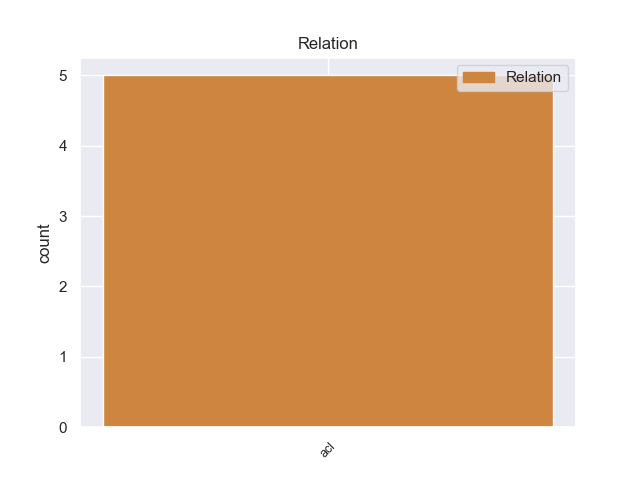
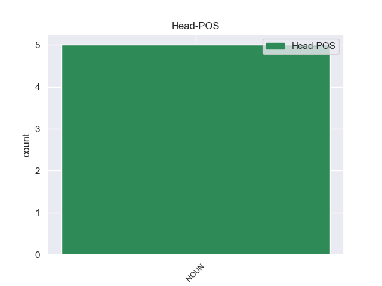

Distribution of features within this leaf



Agreement Rules sorted by frequency.
- When the dependent token is the adjectival clause(acl) of the head token, and the dependent token is VERB.
1 Los _ _ _ _ 0 _ _ _
2 primeros _ _ _ _ 0 _ _ _
3 sellos _ _ _ _ 0 _ _ _
4 de _ _ _ _ 0 _ _ _
5 cera _ _ _ _ 0 _ _ _
6 eran _ _ _ _ 0 _ _ _
7 incoloros _ _ _ _ 0 _ _ _
8 , _ _ _ _ 0 _ _ _
9 más _ _ _ _ 0 _ _ _
10 tarde _ _ _ _ 0 _ _ _
11 fueron _ _ _ _ 0 _ _ _
12 a _ _ _ _ 0 _ _ _
13 menudo _ _ _ _ 0 _ _ _
14 de _ _ _ _ 0 _ _ _
15 cera cera NOUN _ Gender=Fem|Number=Sing 0 _ _ _
16 teñida teñido VERB _ Gender=Fem|Number=Sing|VerbForm=Part 15 acl _ _
17 de _ _ _ _ 0 _ _ _
18 rojo _ _ _ _ 0 _ _ _
19 con _ _ _ _ 0 _ _ _
20 cinabrio _ _ _ _ 0 _ _ _
21 . _ _ _ _ 0 _ _ _
Disagree Examples:
1 Por _ _ _ _ 0 _ _ _
2 su _ _ _ _ 0 _ _ _
3 parte _ _ _ _ 0 _ _ _
4 , _ _ _ _ 0 _ _ _
5 Adrián _ _ _ _ 0 _ _ _
6 Guillermo _ _ _ _ 0 _ _ _
7 Aguilar _ _ _ _ 0 _ _ _
8 , _ _ _ _ 0 _ _ _
9 en _ _ _ _ 0 _ _ _
10 el _ _ _ _ 0 _ _ _
11 artículo _ _ _ _ 0 _ _ _
12 Los _ _ _ _ 0 _ _ _
13 asentamientos _ _ _ _ 0 _ _ _
14 humanos _ _ _ _ 0 _ _ _
15 y _ _ _ _ 0 _ _ _
16 el _ _ _ _ 0 _ _ _
17 cambio _ _ _ _ 0 _ _ _
18 climático _ _ _ _ 0 _ _ _
19 en _ _ _ _ 0 _ _ _
20 México _ _ _ _ 0 _ _ _
21 , _ _ _ _ 0 _ _ _
22 escenario _ _ _ _ 0 _ _ _
23 futuro _ _ _ _ 0 _ _ _
24 de _ _ _ _ 0 _ _ _
25 vulnerabilidad _ _ _ _ 0 _ _ _
26 regional _ _ _ _ 0 _ _ _
27 , _ _ _ _ 0 _ _ _
28 destaca _ _ _ _ 0 _ _ _
29 que _ _ _ _ 0 _ _ _
30 los _ _ _ _ 0 _ _ _
31 mayores _ _ _ _ 0 _ _ _
32 impactos _ _ _ _ 0 _ _ _
33 que _ _ _ _ 0 _ _ _
34 se _ _ _ _ 0 _ _ _
35 prevén _ _ _ _ 0 _ _ _
36 en _ _ _ _ 0 _ _ _
37 el _ _ _ _ 0 _ _ _
38 área _ _ _ _ 0 _ _ _
39 de _ _ _ _ 0 _ _ _
40 la _ _ _ _ 0 _ _ _
41 salud _ _ _ _ 0 _ _ _
42 por _ _ _ _ 0 _ _ _
43 el _ _ _ _ 0 _ _ _
44 calentamiento _ _ _ _ 0 _ _ _
45 generalizado _ _ _ _ 0 _ _ _
46 de _ _ _ _ 0 _ _ _
47 la _ _ _ _ 0 _ _ _
48 atmósfera _ _ _ _ 0 _ _ _
49 son _ _ _ _ 0 _ _ _
50 : _ _ _ _ 0 _ _ _
51 aumento _ _ _ _ 0 _ _ _
52 en _ _ _ _ 0 _ _ _
53 la _ _ _ _ 0 _ _ _
54 mortalidad _ _ _ _ 0 _ _ _
55 y _ _ _ _ 0 _ _ _
56 en _ _ _ _ 0 _ _ _
57 los _ _ _ _ 0 _ _ _
58 niveles _ _ _ _ 0 _ _ _
59 de _ _ _ _ 0 _ _ _
60 desconfort _ _ _ _ 0 _ _ _
61 , _ _ _ _ 0 _ _ _
62 debido deber VERB _ Gender=Masc|Number=Sing|VerbForm=Part 66 acl _ _
63 a _ _ _ _ 0 _ _ _
64 las _ _ _ _ 0 _ _ _
65 altas _ _ _ _ 0 _ _ _
66 temperaturas temperatura NOUN _ Gender=Fem|Number=Plur 0 _ _ _
67 , _ _ _ _ 0 _ _ _
68 y _ _ _ _ 0 _ _ _
69 un _ _ _ _ 0 _ _ _
70 cambio _ _ _ _ 0 _ _ _
71 en _ _ _ _ 0 _ _ _
72 la _ _ _ _ 0 _ _ _
73 distribución _ _ _ _ 0 _ _ _
74 de _ _ _ _ 0 _ _ _
75 los _ _ _ _ 0 _ _ _
76 vectores _ _ _ _ 0 _ _ _
77 de _ _ _ _ 0 _ _ _
78 varias _ _ _ _ 0 _ _ _
79 enfermedades _ _ _ _ 0 _ _ _
80 infecciosas _ _ _ _ 0 _ _ _
81 , _ _ _ _ 0 _ _ _
82 que _ _ _ _ 0 _ _ _
83 se _ _ _ _ 0 _ _ _
84 desplazarían _ _ _ _ 0 _ _ _
85 a _ _ _ _ 0 _ _ _
86 latitudes _ _ _ _ 0 _ _ _
87 norte _ _ _ _ 0 _ _ _
88 . _ _ _ _ 0 _ _ _